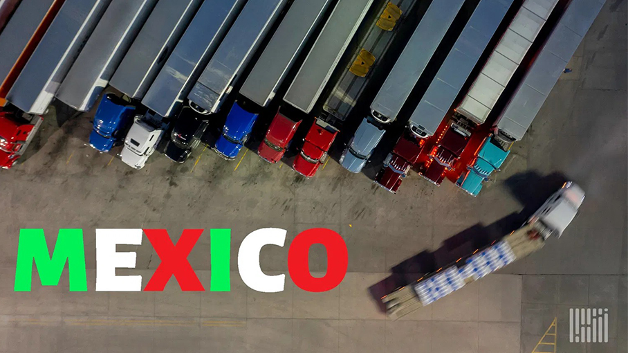

Noi Mahoney, Sunday, June 07, 2026
Original Article:
https://www.freightwaves.com/news/borderlands-mexico-uber-freight-sees-earlier-peak-season-strong-mexico-demand
Articles Reproduced by Permission of FreightWaves

우버 프레이트의 최신 시장 전망에 따르면, 미국-멕시코 공급망에 의존하는 화주들은 2026년 하반기 내내 훨씬 더 타이트해진 화물 시장에 직면할 것으로 보인다. (사진: Jim Allen/FreightWaves)보더랜드 멕시코(Borderlands Mexico)는 미국-멕시코 국경 간 트럭 운송 및 무역 분야의 주요 동향을 주간 단위로 정리하는 코너이다. 이번 주 보더랜드 멕시코 주요 소식: 우버 프레이트(Uber Freight)가 전망한 이른 성수기와 강력한 멕시코 수요, 1분기 멕시코 화물 트럭 운송 부문, 전반적인 경제 성장률 상회; 그리고 피닉스 지역에 110만 제곱피트 규모의 물류 센터 건립 계획.
우버 프레이트, 이른 성수기 및 더 강력해진 멕시코 수요 전망
우버 프레이트에 따르면 여름 배송 시즌을 앞두고 강력한 농산물 수출, 연료비 상승, 운전자 가용성 감소로 인해 국경 간 운송 요금이 상승하면서 미국-멕시코 화물 시장이 예상보다 빠르게 타이트해지고 있다.
이 결과는 목요일 발표된 우버 프레이트의 2분기 시장 업데이트 및 전망 보고서에 포함되었으며, 2026년 후반에 예상되었던 여러 시장 압박이 북미 전역의 화물 네트워크에 이미 영향을 미치고 있다는 결론이었다.
이 보고서는 트럭 단위 스팟 운임이 남은 한 해 동안 2025년 수준보다 20%에서 25% 높은 수준을 유지할 것이며 계약 운임은 5%에서 10% 상승할 수 있다고 예측한다.
우버 프레이트는 농산물 물량, 연료비, 수용 능력의 타이트함을 복합적인 요인으로 언급하며 "성수기가 평소보다 더 일찍 도래하고 있으며, 일반적인 양상과는 다르게 전개되고 있는 것으로 보인다"고 말했다.
멕시코 농산물 수출이 수요 견인
이번 보고서에서 가장 강력한 주제 중 하나는 멕시코의 농산물 수출이 국경 간 화물 시장에 미치는 영향이다.
우버 프레이트는 라레도(Laredo)를 통과하는 농산물 물량이 기록상 가장 붐비는 시즌 중 하나를 경험하고 있다고 밝혔다. 3월 멕시코산 감귤류, 과일, 견과류 선적량은 2025년 같은 기간에 비해 36% 이상 증가했으며, 라레도를 통과하는 총수출은 전년 동기 대비 8% 증가했다.
농산물 화물의 급증은 트럭 운송 역량을 주요 국경 간 회랑 및 농산물 재배 지역으로 끌어들이는 데 기여했다.
보고서에 따르면 운송업체들이 리퍼 화물 운임 상승에 따라 관련 장비를 이동시키면서 일반 화물용 공급이 부족해지는 등 시장이 타이트해지고 있다.
우버 프레이트는 프레즈노(Fresno)에서 시카고로 가는 리퍼 화물 스팟 운임이 한 달 만에 43% 급등하였고, 캘리포니아에서 시카고로 가는 농산물 운송 운임은 최근 몇 주 동안 거의 25% 상승했다고 언급했다.
또한 화주들에게 여름 수요가 정점에 달하기 전에 국경 간 노선에 대해 4~5일 전에 화물 입찰을 하고 리퍼 수용 능력을 조기에 확보할 것을 권고했다.
국경 간 운임 상승
우버 프레이트는 멕시코와 미국 간의 화물 운임이 2월 이후 급격히 상승했다고 밝혔다.
보고서의 멕시코 전망에 따르면 시장 전반에 걸쳐 국경 간 운임이 8%에서 15% 상승했으며, 일부 주요 회랑에서는 단 두 달 만에 30%에 육박하는 상승 폭을 보였다. 연료 인플레이션, 농산물 수요 및 운전자 부족 현상이 결합하여 운송 비용에 대한 상승 압력을 창출하고 있다.
이 보고서는 또한 B-1 상업용 운전자의 가용성 감소를 강조했는데, 이는 국경 간 화물 시장을 서비스하는 운송업체들에게 점점 더 중요해지는 추세이다. 우버 프레이트는 멕시코-미국 화물 네트워크를 타이트하게 만드는 주요 요인 중 하나로 B-1 운전자 수용 능력 감소를 꼽았다.
새로운 압력으로 작용하는 연료비
이와 동시에 운송 제공업체들은 급격히 상승하는 연료비에 직면하고 있다.
우버 프레이트는 전국 평균 디젤 가격이 2월 갤런당 3.72달러에서 5월에는 갤런당 5.64달러로 상승했다고 보고했다. 주로 중동의 지정학적 혼란과 호르무즈 해협을 통한 원유 흐름 감소로 상승이 나타나고 있다.
또한 다수의 멕시코 화물 노선에 표준화된 유류 할증료 프로그램이 없기 때문에 국경 간 운송에서 유류 할증료가 점점 더 큰 문제가 되고 있다고 지적했다.
화주들은 유류 할증료 계약을 검토하고, 할증료 조정 주기를 단축하며, 필요한 경우 연료 부가 요금을 추가해야 한다고 우버 프레이트는 조언했다.
북미 전역의 수용 능력 감소
우버 프레이트는 국경 간 시장을 넘어, 일반적으로 비수기임에도 불구하고 전국적으로 트럭 운송 조건이 타이트해지고 있다고 보고했다.
4월 밴 스팟 운임은 전년 동기 대비 24.8% 증가했고, 리퍼 운임은 26.3% 상승했으며, 평판 트럭 스팟 운임은 23.7% 올랐다. 한편, 스팟 시장 물량은 전년 동기 대비 44% 증가했다. 1차 입찰 수락률은 82%로 떨어졌고, 운송 경로 준수율은 86%로 하락하여 더 많은 화물이 고비용 스팟 시장으로 내몰리고 있다.
우버 프레이트는 규제 변화 또한 운송력 제약에 기여하고 있다고 덧붙였다. 이 회사는 미 연방자동차운송안전국(FMCSA)의 비거주 상업용 운전면허(CDL) 규정으로 인해 향후 5년 동안 매년 약 40,000명의 운전자가 감소하여 가용 수용 능력이 더욱 타이트해질 것으로 추정했다.
지속되는 공급망 변동성
국제 화물 시장은 지정학적 갈등, 관세 정책 변화 및 소싱 전략의 변화가 글로벌 무역 흐름을 바꾸면서 계속해서 불확실성에 직면하고 있다.
우버 프레이트는 글로벌 정시성이 63% 수준에 머물러 있으며, 기업들은 변화하는 무역 정책에 대응하여 중국에서 벗어나 소싱을 다변화하고 공급망을 조정하는 작업을 계속하고 있다고 밝혔다.
화주들에게 전하는 우버 프레이트의 메시지는 분명하다. 즉, 많은 사람들이 성수기에 나타날 것으로 예상했던 조건들이 이미 도래했다는 것이다.
보고서는 "이러한 조건에 선제적으로 대응할 수 있는 시간이 좁아지고 있다"며 화주들에게 수용 능력을 조기에 확보하고 입찰 수락률을 면밀히 모니터링하며 중요한 국내 및 국경 간 노선에 대한 비상 계획을 수립할 것을 촉구했다.
1분기 멕시코 화물 트럭 운송 부문, 전반적인 경제 성장률 상회
멕시코의 화물 트럭 운송 부문은 2026년 1분기에 1.8% 성장하였으며, 국경 간 및 국내 화물 수요가 회복력을 유지함에 따라 운송 부문 전반의 성장률과 멕시코 전체 경제의 성장률을 모두 상회했다.
멕시코 비즈니스 뉴스의 보도에 따르면 멕시코 국립통계지리청(INEGI)의 데이터 분석 결과, 해당 분기 동안 운송, 우편 및 창고 부문은 0.4% 성장했으며 멕시코의 국내총생산(GDP)은 연간 0.4% 증가했다.
화물 트럭 운송은 멕시코의 운송, 우편 및 창고 부문에서 창출된 GDP의 51.4%를 차지했으며, 해당 분기 국가 GDP의 3.8%를 차지했다.
피닉스 지역에 110만 제곱피트 규모 물류 센터 건립 계획
휴스턴에 본사를 둔 러벳 인더스트리얼(Lovett Industrial)과 피크라인 부동산 펀드(Peakline Real Estate Funds)는 애리조나주 글렌데일에 위치한 114만 제곱피트 규모의 클래스 A 크로스 도크 산업 시설인 ‘노스 파크 물류 센터’의 착공에 돌입했다.
보도 자료에 따르면, 이 프로젝트는 메트로 피닉스의 사우스웨스트 밸리에 있는 약 56에이커 부지에 개발될 예정이며 노던 파크웨이(Northern Parkway), 루프 303(Loop 303) 및 10번 주간고속도로(Interstate 10)로 직접 진입할 수 있다.
이 선제적 개발 프로젝트는 대규모 유통 사용자를 대상으로 설계됐으며, 40피트의 높이, 197개의 도크 도어, 29개의 녹아웃 패널 및 넓은 트레일러 주차 공간을 갖출 예정이다.
1단계는 2027년 2분기에 준공 예정이며, 계획된 2단계에서는 약 623,000제곱피트가 추가될 계획이다. 이 프로젝트의 마케팅 및 임대는 CBRE에서 담당하고 있다.